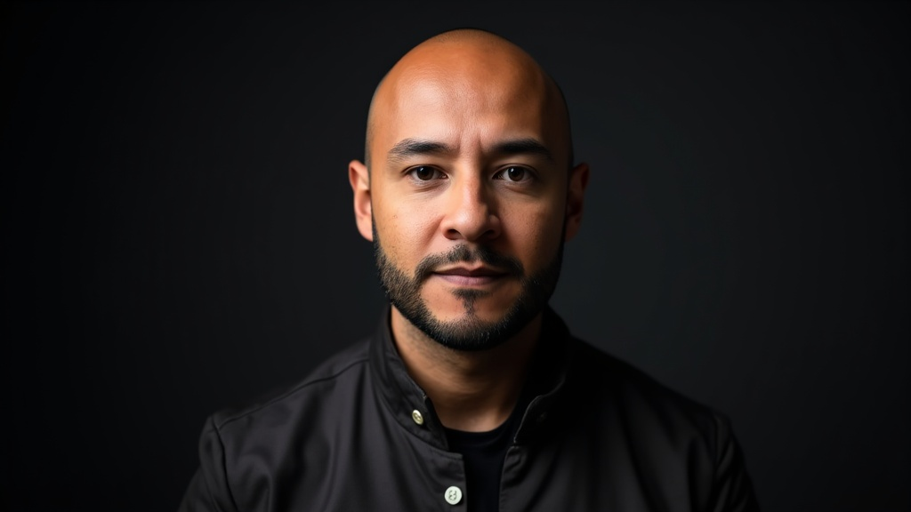

Bogotá · Colombia — Vancouver · Canadá
Empresario, estratega y constructor de futuros con inteligencia artificial. Doce años en el mundo corporativo. Una vida entera de curiosidad tecnológica. Una decisión que lo cambió todo.
El origen
Durante más de doce años, Sebastián construyó una carrera sólida en el mundo corporativo latinoamericano. Retail, banca, grandes marcas. Presupuestos millonarios, equipos numerosos, negociaciones en varios países de América Latina.
"Siempre supe que la tecnología era mi llamado real. Lo guardé como hobby durante años. Hasta que decidí que ya no podía seguir postergándolo."
A los 38 años, lo que alguna vez fue una curiosidad silenciosa —sistemas que construía de noche, código que escribía por puro amor— se convirtió en su misión principal. Sebastián eligió construir algo propio. Desde cero. Con inteligencia artificial como herramienta y la libertad como norte.
En cifras
La línea de tiempo
Gerencia de retail, presupuestos de gran escala y negociaciones en mercados latinoamericanos. Aprendió que los negocios son, ante todo, personas.
Alianzas comerciales, adopción de productos y estrategias de partnerships a nivel nacional. Mientras tanto, en paralelo, cultivaba su fascinación por la IA.
Construyó sus primeras empresas propias antes de necesitarlo. VirtualStage, Applied Inc., PowerClean BC. No esperó al momento perfecto. Actuó antes de estar listo.
Un nuevo continente. El mismo fuego. Sebastián llega a Canadá con tres empresas operando y una comunidad creciendo en toda América Latina.
Ecosistema
Automatización con IA para PYMEs canadienses. Transforma los procesos más pesados de pequeñas empresas en flujos inteligentes que trabajan solos.
Home staging virtual con IA. Convierte propiedades vacías en espacios que enamoran a compradores, sin mover un solo mueble. Proyección: $15M ARR.
Servicios de limpieza con operaciones automatizadas. Un agente de voz con IA gestiona consultas, reservas y seguimiento de clientes.
Su comunidad más importante. Una plataforma en español donde enseña a profesionales latinoamericanos sin formación técnica a usar la IA para crear negocios propios y vivir con libertad.
Lo que lo mueve
Sebastián no esperó a tener todo perfecto. Construyó mientras avanzaba. Porque la libertad no es un destino: es una decisión que se toma cada día.
La IA puede dar a cualquier persona —sin importar su país, idioma o capital inicial— las mismas herramientas que antes solo tenían las grandes corporaciones.
Por eso Neural Studio existe. Sebastián entiende que enseñar es la forma más poderosa de consolidar lo que uno sabe, y de dejar algo que perdure.
Todo lo que construye tiene un nombre y una razón de ser. El MBA, las empresas, la comunidad — son cartas de amor hacia el futuro de los suyos.
Lo que viene
Vancouver, julio 2026. Un nuevo continente. El mismo fuego. Sebastián no va a estudiar qué es el éxito. Va a escalarlo.
Escribir a Sebastián